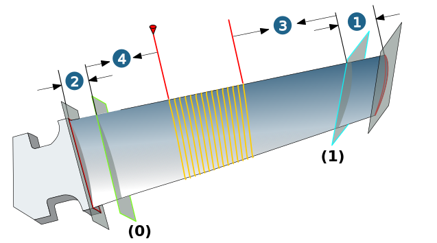
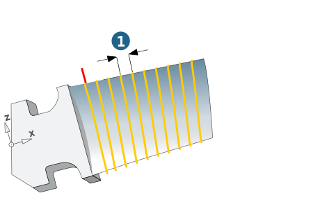
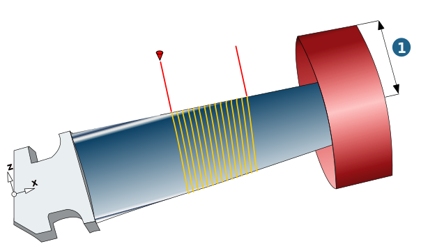

Parameters
Limit 1 (hub)/Limit 2 (shroud)
Limitations define the machining area between hub and shroud Closed contours must be selected.
Offset: Use a positive value to move the first path further into the machining area. This is particularly important if the blade enters the platform at an extremely oblique angle.
Warning
The machining area must be defined so that the first/last path lies within the area of the blade surfaces selected.
Iso parameter: To split the entire area between hub and shroud (including offsets) into seamless regions without sketching intermediate profiles in the CAD environment. To create a continuous spiral over splits along an intermediate ISO parameter, the spiral always remains open.
Note
Iso parameters belong to the blade geometry and not to the cutting direction. The following applies:
-
0 ≤ Iso parameter for limit 2 (hub) < Iso parameter for limit 1 (shroud) ≤ 1.
In order to achieve a continuous spiral, the orientation of the holder with respect to the infeed (Dialog page 5 Axes) must not change.
|
Example: |
(1) Offset for limit 1 (shroud) = 12 (2) Offset for limit 2 (hub) = 12 (3) Iso parameter for limit 1 (shroud) = 0.6 (4) Iso parameter for limit 2 (hub) = 0.2 |
|  |
Close spiral
First path / Last path: spiral can be closed, if the corresponding Iso-Parameter is 0 (hub) or 1 (shroud).
Allowances
Blade allowance: Allowance for blade surfaces.
Technology add. edge allowance
If a little more material is to be left on the edges, the following options are available – depending on the option selected under → – to define an independent additional allowance for the edges.
1) Manually defined boundary: Define an independent additional allowance for both edges with the parameters Leading edge offset and Trailing edge offset.
2) Surface boundary: Use the Edge offset parameter to define an offset value that applies equally to both edges.
Lateral infeed mode
Constant: The maximum stepover is assigned by manual input.
|  |
Technology: Edge behavior
A separate feedrate can be defined in the edge area.
Safety
For this machining only the mode Radial is available. Enter value for the Clearance radius (1).
|  |
Note
In the case of machines that are used for turbine blade milling, the workspace is generally measured extremely tightly. The radial approach and retract strategy for a (shown) clearance cylinder helps to safely limit these movements independently of the frame orientation.